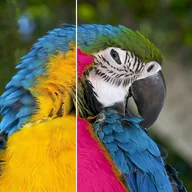

কালার রিপ্লেস

একটি কালারের বদলে অন্য কালার বসায়। অ্যালফা রিপ্লেসমেন্টের তীব্রতা নিয়ন্ত্রণ করে; লুমিন্যান্স লক মূলের আলো-ছায়া রাখে।
সেটিংস
| সেটিং | ধরন | রেঞ্জ | ডিফল্ট |
|---|---|---|---|
| কালার রিপ্লেস | কালার | – | #FF0000 |
| নতুন কালার | কালার | – | #0000FF |
| থ্রেশহোল্ড | সংখ্যা | 0% থেকে 400% | 25% |
| ফেদার | সংখ্যা | 0% থেকে 200% | 25% |
| অ্যালফা | সংখ্যা | 0% থেকে 100% | 100% |
| লুমিন্যান্স লক | চালু বা বন্ধ | – | বন্ধ |
| চোক | সংখ্যা | 0.5 থেকে 20 | 2 |